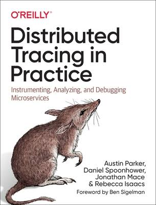

I am a researcher in the Cloud Reliability group at Microsoft Research in Redmond, WA.
Previously, I was tenure-track faculty at the Max Planck Institute for Software Systems (2018-2022), where I led the Cloud Software Systems group and held a dual appointment at Saarland University.
I received my PhD from Brown University (2011-2018) under the supervision of Rodrigo Fonseca, supported in part by a Facebook PhD Fellowship.
Research
My research focuses on designing and building reliable, observable, self-managing cloud systems. A central goal for me is to make it easier to operate large, complicated software systems, and to understand their behavior at runtime. Currently I am working at the intersection of observability, semantic modeling, and agentic AI.
Select Projects
Telemeta. Large-scale telemetry lacks semantic context: metric names are opaque; table relationships are implicit; tables are overloaded; and data is unnormalized. Making effective use of telemetry requires extensive discovery: understanding where data lives, what form it takes, and what rules apply to extract it. Telemeta extracts and indexes semantic models from metric data — what metrics measure, what columns represent, how tables relate, and hidden assumptions about data formats — to give agents a structured foundation for interpreting telemetry.
ℹ️ This is an ongoing project I lead at Microsoft.
Hindsight is a distributed tracing framework for retroactive sampling, i.e. capturing detailed traces for rare and outlier requests without the data loss of tail sampling-based systems. Hindsight revisits the design assumptions behind tail sampling: we found that the overhead of trace collection is not inherent to tracing itself, but comes primarily from transmitting, indexing, and storing traces. Local capture is cheap. Hindsight exploits this by recording all traces into lightweight local ring buffers and persisting them only when a downstream trigger fires (e.g., an error or SLO violation). The key insight is that you can defer the sampling decision until after you know what matters, as long as local storage is cheap and triggers are fast. We built Hindsight from the ground up; its code is open-sourced (NSDI 2023; GitLab).
Blueprint is an extensible compiler and benchmark suite for microservice applications. Experimenting with end-to-end ideas in microservices requires changing scaffolding across many services - a tedious, time-consuming task. Blueprint separates workflow logic from infrastructure choices, letting researchers swap RPC frameworks, enable tracing, or add replication with a few lines of config rather than hundreds of lines of code (SOSP 2023; GitHub).
Pivot Tracing is a cross-component monitoring framework for distributed systems. Filtering or aggregating metrics across component boundaries requires associating events in one location with shared keys from another. To address this, Pivot Tracing propagates tuples/tags to enable such queries without per-query instrumentation. Pivot Tracing does this with a novel baggage abstraction for general-purpose context propagation. Baggage acts as a narrow waist for cross-cutting tools: many tools share how they propagate context but differ in what they carry and how they interpret it. Pivot Tracing received the Best Paper Award at SOSP 2015; code is on GitHub. Today, baggage is part of OpenTelemetry's trace context.
Software
Research projects and code are scattered across a few locations:
- github.com/JonathanMace (personal projects)
- gitlab.mpi-sws.org/cld (MPI-SWS projects)
- github.com/brownsys (Brown University projects)
- github.com/tracingplane (Brown University projects)
My work is first and foremost motivated by the scale and complexity of large, modern cloud and internet applications, and the difficulty of achieving end-to-end reliability.
The perspective I've always been drawn to is that of end-to-end behavior: requests in distributed systems traverse machines, processes, queues, and backends, and a failure at any point can cascade into end-to-end impact. How do we observe, and ultimately improve, end-to-end behavior in such systems? Much of my work has orbited distributed tracing, touching topics both direct (e.g., tracing mechanisms) and indirect (e.g., downstream tasks like root-cause analysis).
Beyond tracing, my research more broadly asks how to achieve end-to-end reliability, robustness, and performance by design. Over the years I've built systems exploring abstractions and design principles for, e.g., multi-tenant isolation, predictable performance, and causal consistency. And of course, as often happens in systems research, resource management and scheduling keep resurfacing again and again!
Distributed Tracing
A few highlights from my work on distributed tracing:
- Standards. From around 2015 I worked with the Distributed Tracing Working Group to help initiate the OpenTracing standard; I later served on its Industrial Advisory Board. OpenTracing has since become the tracing arm of OpenTelemetry. That experience fed into Distributed Tracing in Practice ( O'Reilly, 2020), co-authored with colleagues from Lightstep.
- Baggage. In Pivot Tracing I proposed baggage, a general-purpose context propagation mechanism (SOSP 2015, Best Paper Award). Baggage acts as a narrow waist for cross-cutting tools: many tools share how they propagate context but differ in what they carry and how they interpret it. After Pivot Tracing I refined the design and explored additional use cases in a follow-up paper (EuroSys 2018) and in my PhD thesis, which received the Honorable Mention for the 2018 Dennis Ritchie Thesis award. Several subsequent projects have built on this substrate (see below). Today, baggage is part of OpenTelemetry's trace context.
- Tracing at Facebook. During my PhD I spent time working at Facebook on Canopy, their end-to-end performance tracing and analysis system (SOSP 2017). Canopy juxtaposes with other distributed tracing work in interesting ways: Canopy collected on the order of a billion traces per day, and at that scale, semantic heterogeneity became a first-order design concern: engineers instrument in different ways, and the pipeline still has to unify those choices end-to-end, including trace-derived aggregates.
- Consuming Traces. Most tracing research (including my own) focuses on capture mechanisms; what happens after traces land is often an afterthought. To better understand practitioners' actual workflows, we interviewed engineers about challenges and use-cases (IEEE TVCG 2023). This followed from work where we found that systems researchers frequently omit or elide user-facing concerns when designing systems (SoCC 2022).
Cross-Cutting Tools
A recurring theme in my work is cross-cutting tools: tools that need to span components and layers because the property they measure or enforce is end-to-end. Tracing is one instance, but the same pattern shows up elsewhere, such as:
- Resource Management. Multi-tenant isolation requires coordinating resource policies across distributed components, but scheduling decisions are local. Retro propagated tenant IDs in-band so that each component could enforce per-tenant limits consistently (NSDI 2015).
- Cross-Component Metrics. Filtering or aggregating metrics across component boundaries requires associating events with shared keys. Pivot Tracing propagated tuples/tags to enable such queries without per-query instrumentation (SOSP 2015).
- Cross-Service Causal Consistency. Independent backends can violate causal ordering even when each is internally consistent. Antipode propagated lineage-style context with requests to enforce a causal consistency model across services (SOSP 2023).
- Critical-Path Analysis. Identifying the critical path of a distributed request requires propagating slack and timing measurements online. CPath does this; I co-advised the project, which formed the basis of George Sun's MSc thesis (PDF).
Across these projects, Baggage serves as shared propagation infrastructure. It does not eliminate deployment effort, but it concentrates that effort into a reusable mechanism rather than repeating it for each tool.
Tracing Instrumentation
Instrumentation is the unglamorous bottleneck of tracing. I have instrumented many systems for context propagation - Hadoop, HDFS, Spark, HBase, microbenchmarks, and more - and that hands-on work shaped much of my understanding of what is realistic to expect from engineers.
- During Retro and Pivot Tracing, I developed aspect-oriented techniques for automatic instrumentation of Java codebases. The approach was not exhaustive but covered common patterns effectively and provided a starting point for manual refinement (code).
- Ironically, the very first iteration of Baggage was to enable Retro, so I could iterate on context-propagation ideas without having to re-instrument or re-build from scratch each time.
- We also studied inter-thread communication patterns to identify candidate instrumentation points; that work is captured in Nicolas Schäfer's MSc thesis (PDF).
- Getting instrumentation into production systems is as much an organizational challenge as a technical one. I discuss these issues in Chapter 7 of my PhD thesis (PDF). With the recent progress in LLMs and coding agents, automated instrumentation and trace-correctness validation may soon become practical. It is only a matter of time...
Trace Sampling
Tracing faces a pretty clear trade-off between data volume and computational costs (compute, storage, network, and operational complexity). There is no one-size-fits-all solution to sampling, as different data suits different use cases. I've looked at sampling and retention through a few lenses:
- Tail-based outlier sampling. My early work explored unsupervised techniques to bias sampling toward unusual traces; the goal was to detect outliers without hand-engineering features, despite highly heterogeneous and imbalanced traces. The techniques explored include graph kernels (2014 MSc project), clustering (SoCC 2018), and autoencoders (SoCC 2019).
- Retroactive sampling. Tail sampling has always struck me as a bitter compromise: by the time you decide a request is interesting, you have already lost the trace data you need. Hindsight revisits the design assumptions behind tail sampling. We found that the overhead of trace collection is not inherent to tracing itself - it comes from transmitting, indexing, and storing traces. Local capture is cheap. Hindsight exploits this by recording all traces into lightweight local ring buffers and persisting them only when a downstream trigger fires (e.g., an error or SLO violation). The key insight is that you can defer the sampling decision until after you know what matters, as long as local storage is cheap and triggers are fast. We built Hindsight from the ground up; its code is open-sourced (NSDI 2023; Gitlab).
- Sampling for derived metrics. Trace-derived aggregate metrics can become biased under non-uniform head-based sampling. We explored this topic without publishing a paper; our notes and proposed directions appear in Reyhaneh Karimipour's MSc thesis (PDF).
Telemetry for Models and Agents
Models and agents are increasingly consumers of telemetry, not just humans. This raises concrete systems questions: how should we design and integrate those agents? What representations and interfaces enable automated tools to use telemetry effectively? Several recent projects explore this direction:
- Telemeta. Large-scale telemetry lacks semantic context: metric names are opaque; table relationships are implicit; tables are overloaded; and data is unnormalized. Making effective use of telemetry requires extensive discovery: understanding where data lives, what form it takes, and what rules apply to extract it. Telemeta extracts and indexes semantic models from metric data - what metrics measure, what columns represent, how tables relate, and hidden assumptions about data formats - to give agents a structured foundation for interpreting telemetry. This is an ongoing project I lead at Microsoft.
- Causal Discovery. Causal reasoning is a powerful technique for root-cause analysis when metrics have known causal relationships. The challenge is constructing the causal graph: data-driven discovery struggles with cloud telemetry because incidents are rare and heterogeneous. In Atlas, we sidestepped this by using LLMs to extract causal graphs from system documentation rather than from observational data, thus treating graph construction as knowledge extraction. Atlas decomposes a system into LLM agents that interpret component descriptions and identify pairwise causal relationships (arXiv 2024).
- AIOps Benchmarking. Evaluating AI agents on cloud-operations tasks requires realistic, controlled environments. AIOpsLab is a benchmark framework that deploys live microservice applications, injects realistic faults, and provides agents with a controlled interface to observe telemetry and take actions - supporting tasks like detection, localization, root-cause analysis, and mitigation (MLSys 2025).
- Retry Bugs. Retry logic is notoriously hard to test and frequently breaks in production. We combined LLMs with static analysis and fault injection to automatically detect retry bugs, finding over 100 previously unknown issues across major distributed systems (SOSP 2024).
- Time-Series Anomaly Detection. Black-box anomaly-detection algorithms are hard to inspect and validate. We used LLMs to generate anomaly-detection programs for time-series metrics; programs are human-readable and can be reviewed before deployment (arXiv 2025).
Systems Building
Many of my projects culminate in working systems - for me, a research idea is only worthwhile if it survives practical constraints. Three themes recur across these systems:
- Resource management. Sharing resources fairly without sacrificing utilization is hard, especially when request costs vary widely and are unknown at schedule time. Retro and 2DFQ both tackled multi-tenant isolation: Retro at the level of distributed components, 2DFQ at the level of thread pools within a process (NSDI 2015; SIGCOMM 2016).
- Performance Predictability. Clockwork is a multi-tenant DNN serving system; in this project we asked whether tail latency could be eliminated rather than merely tolerated. The key insight was that DNN inference is deterministic - if you consolidate all scheduling choices centrally and treat any timing deviation as an error, you can achieve six-nines SLO compliance. We built Clockwork from the ground up and open-sourced it; at OSDI 2020 the work received the Distinguished Artifact award (OSDI 2020; GitLab).
- Microservices for Research. Experimenting with end-to-end ideas in microservices requires changing scaffolding across many services - a tedious, time-consuming task. Blueprint separates workflow logic from infrastructure choices, letting researchers swap RPC frameworks, enable tracing, or add replication with a few lines of config rather than hundreds of lines of code (SOSP 2023; GitHub).

Supervised Theses
I have been fortunate to work with many talented students over the years. In particular I advised or co-advised the following theses:
Other Documents
Other Resources
- Instrumented forks of various systems (GitLab)
- Datasets collected (GitLab)
- Microbricks benchmark system (GitLab)
- TPCDS Spark implementation (GitLab)
- Visualization demos: Demos | Source code